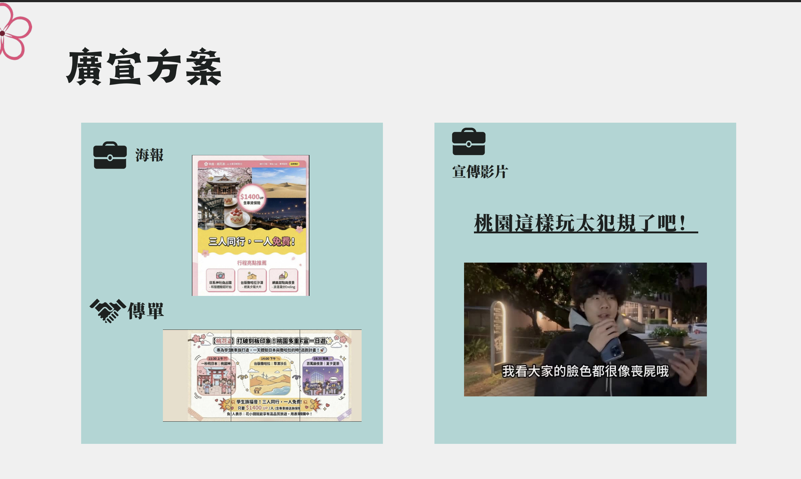
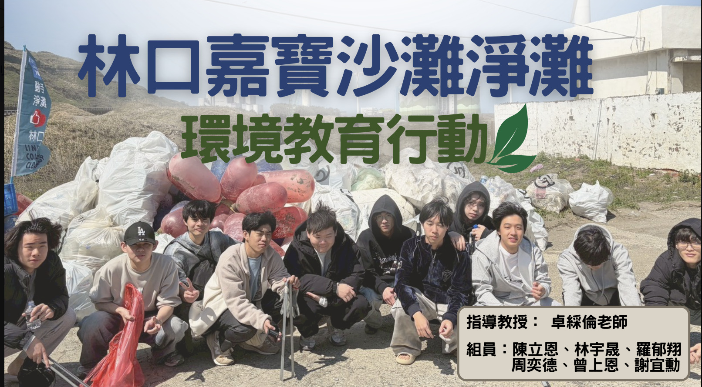
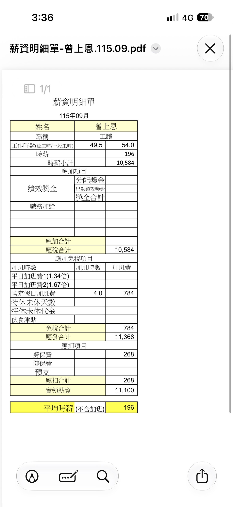

學歷背景
-
中原大學 資訊管理學系
修習管理學、多媒體程式設計等核心課程，兼顧理論與實作。
-
新北市私立南山高中
高中畢業，培養了扎實的數理與邏輯思考能力。

修習管理學、多媒體程式設計等核心課程，兼顧理論與實作。
高中畢業，培養了扎實的數理與邏輯思考能力。
中原大學 · 資訊管理學系 (CYCU IM)
結合資訊技術與企業管理的雙核心訓練。在學期間不僅專注於基礎程式語言開發，更透過企業專案、多媒體設計與管理學程，培養系統分析、專案規劃與團隊協作能力，建立從技術實作到商業邏輯的完整視角。
Python 程式設計
Java 基礎開發
HTML / CSS
團隊領導與溝通

在AI時代背景下，為創意行銷公司設計桃園遊憩整合行銷方案。我擔任銷售長(CSO)與廣宣人員，負責拍攝宣傳影片與製作簡報。過程中體會到專案分工與適性用人的重要性；為了完美呈現，我投入大量心力內化影片台詞，並在事後檢討中學會如何更精準地掌握報告細節以吸引客群。
查看宣傳影片佐證資料 →
於管理學課程中擔任紀錄組，負責影像紀錄、問卷設計與分析（成功回收52份樣本）。在強風中頂著體力考驗進行地毯式淨灘，並主動與遊客進行現地環保宣導。看著沙灘恢復乾淨，深刻體悟環保需從自帶環保杯等日常做起；活動中大家不怕髒、互相幫忙，展現了極佳的團隊凝聚力。
檢視服務學習活動佐證照片 →
目前擔任中原資管系籃球隊長，擅長將複雜的半場進攻戰術轉化為明確指令帶領隊友，培養出高度責任感、抗壓性與團隊溝通能力。曾獲選台北市優良學生，展現自律與優異表現。此外，具備咖啡廳打工經驗，在第一線面對顧客，鍛鍊出沉穩應對進退的服務熱忱與實務問題解決能力。
聯絡我了解更多經歷 →